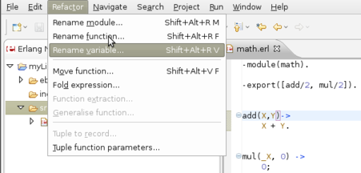

"Refactoring is a disciplined technique for restructuring an existing body of code,
altering its internal structure without changing its external behavior.
Its heart is a series of small behavior preserving transformations. Each transformation
(called a 'refactoring') does little, but a sequence of transformations can produce a significant restructuring.
Since each refactoring is small, it's less likely to go wrong. The system is also kept fully working after each small refactoring,
reducing the chances that a system can get seriously broken during the restructuring."
http://www.refactoring.com/
Wrangler is an Erlang refactoring tool. It is built using the Erlang Syntax Tools library. Wrangler has a GUI for both the EMACS editor and the Eclipse IDE, using erlIDE. It supports preservation of the code layout for that part of the code that is unmodified.
Features:
undo/redo operationsEach refactoring can be invoked from the Refactor menu selecting its name.
Then a wizard window appears, in which the necessary parameters are requested and the user can select either to apply the refactoring, or to preview the results of doing it.

If the result of the selected refactoring is undesirable, it can be cancelled after previewing it.

Refactorings can be also called from the Navigator/Outline view by right clicking on an Erlang element, and then selecting the Refactor menu.
Some of them (such as rename function refactoring) also has a shortcut (e.g. CTRL + ALT + R F), in this case it is possible to call the refactoring with the key combination.